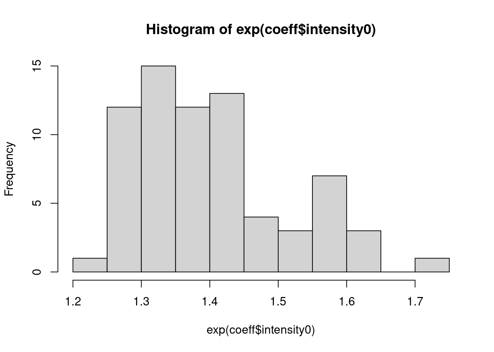
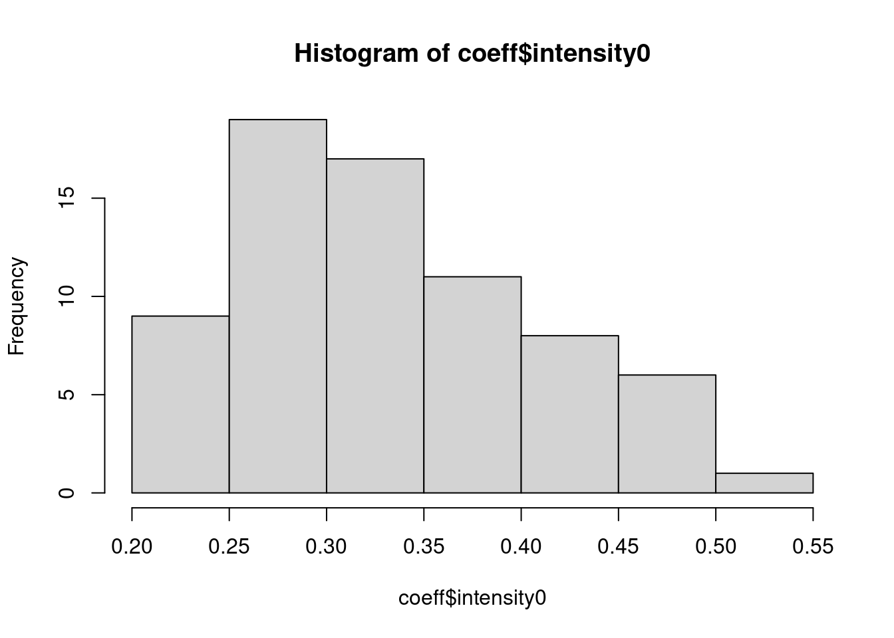
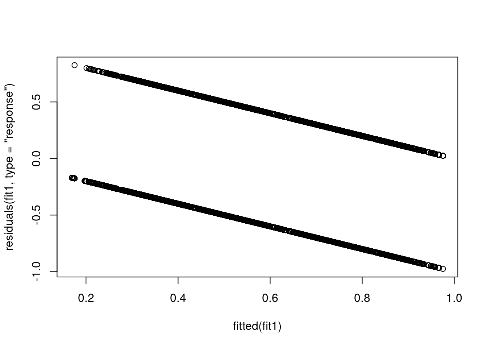
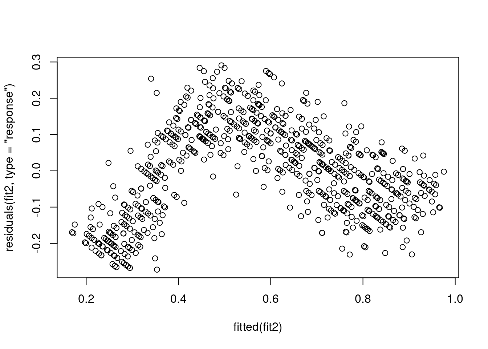
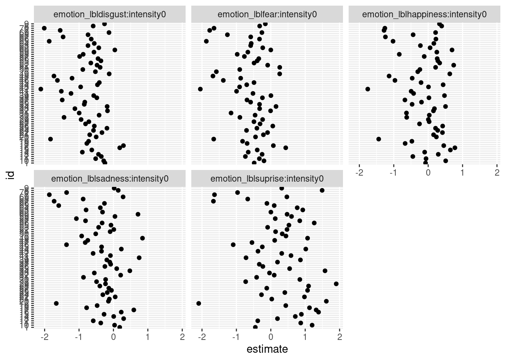

library(here)
library(tidyverse)
library(lme4)
library(glmmTMB)
library(lmerTest)
# fittare un modello specificato con formula per ogni id (|cluster)
# model = lm/glm (o altro)
# args = altri argomenti dentro la funzione (e.g., family = )
# ad esempio, per stimare l'effetto di x1 + x2 per ogni cluster
# y ~ x1 + x2 | cluster
fit_by_cluster <- function(formula, data, model = NULL, args = NULL){
if(is.null(model)){
model <- lm
}
parts <- lme4:::modelFormula(formula)
groups <- as.character(parts$groups)
datal <- split(data, data[[groups]])
args$formula <- parts$model
lapply(datal, function(x){
do.call(model, args = c(args, list(data = x)))
})
}
dat <- readRDS(here("data/emoint.rds"))
dat <- filter(dat, emotion_lbl != "neutral")
dat$intensity0 <- (dat$intensity/10) - 1
fit1 <- glmer(acc ~ intensity0 + (intensity0|id),
data = dat,
family = binomial(link = "logit"))
fit10 <- glmer(acc ~ 1 + (1|id),
data = dat,
family = binomial(link = "logit"))
summary(fit1)Generalized linear mixed model fit by maximum likelihood (Laplace
Approximation) [glmerMod]
Family: binomial ( logit )
Formula: acc ~ intensity0 + (intensity0 | id)
Data: dat
AIC BIC logLik -2*log(L) df.resid
30742.3 30783.2 -15366.2 30732.3 26265
Scaled residuals:
Min 1Q Median 3Q Max
-6.2930 -0.7394 0.3993 0.7623 2.1703
Random effects:
Groups Name Variance Std.Dev. Corr
id (Intercept) 0.069921 0.26443
intensity0 0.007283 0.08534 -0.43
Number of obs: 26270, groups: id, 71
Fixed effects:
Estimate Std. Error z value Pr(>|z|)
(Intercept) -1.09351 0.04058 -26.94 <2e-16 ***
intensity0 0.33490 0.01148 29.17 <2e-16 ***
---
Signif. codes: 0 '***' 0.001 '**' 0.01 '*' 0.05 '.' 0.1 ' ' 1
Correlation of Fixed Effects:
(Intr)
intensity0 -0.545coeff <- coefficients(fit1)$id
hist(exp(coeff$intensity0))
hist(coeff$intensity0)
plot(fitted(fit1), residuals(fit1, type = "response"))
# influence(fit1) # ci mette molto
dat_agg <- dat |>
group_by(id, intensity0) |>
summarise(nc = sum(acc),
nf = n() - nc,
p = nc / n(),
n = n())
# aggregated vs binary model
fit2 <- glmer(cbind(nc, nf) ~ intensity0 + (intensity0|id),
data = dat_agg,
family = binomial(link = "logit"))
fit20 <- glmer(cbind(nc, nf) ~ 1 + (1|id),
data = dat_agg,
family = binomial(link = "logit"))
car::compareCoefs(fit1, fit2)Calls:
1: glmer(formula = acc ~ intensity0 + (intensity0 | id), data = dat, family
= binomial(link = "logit"))
2: glmer(formula = cbind(nc, nf) ~ intensity0 + (intensity0 | id), data =
dat_agg, family = binomial(link = "logit"))
Model 1 Model 2
(Intercept) -1.0935 -1.0935
SE 0.0406 0.0406
intensity0 0.3349 0.3349
SE 0.0115 0.0115
anova(fit20, fit2)Data: dat_agg
Models:
fit20: cbind(nc, nf) ~ 1 + (1 | id)
fit2: cbind(nc, nf) ~ intensity0 + (intensity0 | id)
npar AIC BIC logLik -2*log(L) Chisq Df Pr(>Chisq)
fit20 2 10100.1 10109 -5048.0 10096.1
fit2 5 5356.2 5379 -2673.1 5346.2 4749.9 3 < 2.2e-16 ***
---
Signif. codes: 0 '***' 0.001 '**' 0.01 '*' 0.05 '.' 0.1 ' ' 1anova(fit10, fit1)Data: dat
Models:
fit10: acc ~ 1 + (1 | id)
fit1: acc ~ intensity0 + (intensity0 | id)
npar AIC BIC logLik -2*log(L) Chisq Df Pr(>Chisq)
fit10 2 35486 35503 -17741 35482
fit1 5 30742 30783 -15366 30732 4749.9 3 < 2.2e-16 ***
---
Signif. codes: 0 '***' 0.001 '**' 0.01 '*' 0.05 '.' 0.1 ' ' 1# nella forma binomial, i residui sono leggermente meglio
plot(fitted(fit2), residuals(fit2, type = "response"))
# vediamo la variabilità nelle interazioni
ff <- fit_by_cluster(acc ~ emotion_lbl * intensity0 | id,
data = dat,
model = glm,
args = list(family = binomial))
ff |>
lapply(broom::tidy) |>
bind_rows(.id = "id") |>
filter(grepl(":", term)) |>
filter(abs(estimate) < 5) |>
ggplot(aes(x = estimate, y = id)) +
geom_point() +
facet_wrap(~term) 
to_remove <- ff |>
lapply(broom::tidy) |>
bind_rows(.id = "id") |>
filter(grepl(":", term)) |>
filter(abs(estimate) > 5) |>
pull(id) |>
unique()